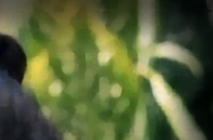
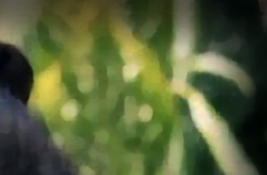

The Investigations of 2007 and 2010
In 2007, I was investigated by the FBI for planning to organise a sex cult involving teenage girls. A computer containing the alleged plan was seized by the FBI. In 2010, nineteen year old Samantha Spiegel interviewed with mainstream media for two months stating that I was the leader of a sex cult. Her account was filled with stories of the sexual abuse of little girls and a death squad that would kill on my command.
(JMK) 07/06/24 - The word "cult" is the most offensive term that any religious group or commune could ever be called. The word conjures up an image of a flock of fanatics led by a madman who are all hell bent on a cause that leads to self-destruction, the destruction of those who come against the group, or both. This is the tale of two "cults" - one of which was Jim Jones' and one of which is allegedly my own. It is also the tale of two cult investigations. The first investigation was for the plan to create a cult, launched against me in 2007. The second investigation was for leading an already created cult, launched against me in 2010. The 2007 FBI investigation was never truly known to the public. The 2010 investigation was exposed in mainstream media for two months.
It seems I'm from a long line of leaders and organisers of religious groups in foreign lands. My father was a missionary preacher in Jamaica in the late 1950's. He also did some preaching at the church he attended as a child. He did radio sermons in Atlanta. His first wife was the daughter of a preacher. His second wife, my mother, was also the daughter of a preacher. My mother's father was a church pastor on several occasions in the United States. Her father was a missionary evangelist in Guatemala, Central America in the 1970's. My mother was a missionary, with a young preacher, as a teenager in the mid 1950's. They spread the gospel on the U.S. west coast that included the states of California and Oregon. After my parents married in 1958, my mother returned, on several occasions, to my father's previous missionary work in Jamaica. My mother and father were both Pentecostal preachers during their marriage from 1958 to 1969. I do admit that, with such a religiously rooted father, mother, and grandfather, there was an influence in my life to possibly pursue a similar path. Many have thought I've done just that.
In 2007, I was investigated by the FBI for planning to organise a sex cult involving teenage girls. A computer containing the alleged plan, belonging to a person in the state of Louisiana, was seized by the FBI. Supposedly, there were a series of communications between a person alleged to be me and another person, discussing the creation of a sex cult with a central focus on moms and their teenage daughters. The FBI held the computer for several days. It was later returned to its owner with insufficient evidence to charge me with a crime. I was informed about the FBI investigation from start to finish by a source who knew the Louisiana computer owner. I was never approached by the FBI personally.
In 2010, nineteen year old Samantha Spiegel, who lived in the Marina District of San Francisco, interviewed with mainstream media for two months, saying that I was the leader of a sex cult called The Immaculates. Her account was filled with stories of the sexual abuse of little girls and a death squad that would kill on my command. Spiegel stated that she feared for her own life. Maybe she thought my death squad was coming for her. The San Francisco Police, along with the San Francisco District Attorney's Office, were part of the investigation. If the FBI was involved in 2010, I wouldn't know about it but would not be surprised if they were.


Spiegel claimed to be one of my past students though she was in a totally different grade from the one I worked with in a San Francisco school for girls. She said I led a cult of JonBenet Ramsey look alike little girls. She said that I asked her to walk the streets of San Francisco at night seeking little girls to abduct for my sexual pleasure or for the cause of my cult. JonBenet Ramsey look alikes, indeed. I am not, nor have I ever been, obsessed with any one little girl from my past. The media gave her center stage to expose me.
Fox News reported that there was a criminal warrant out for my arrest. Believing this "news", I flew from Paris to America to face up to these charges. Fox News retracted their statement after I arrived in America. Quite simply, there never was a warrant for my arrest. The District Attorney's office in San Francisco, headed at that time by once Vice President of the United States, Kamala Harris, made an official statement that they never had plans to issue a warrant for my arrest. Instead, I was served with a restraining order to stay away from Spiegel which was totally ridiculous as I had to fly from Europe to be served with an order to stay away from a person in a continent I had left years prior. I returned to Paris one week and a half after arriving back in America. My regrets for returning to America at all were numerous.
As late as 2017, a reporter asked me if I still led a cult. I responded, "After seven years, you're still asking me that? Unbelievable!" If my answer to the reporter's question had been affirmative, the story according to Spiegel in 2010 would have been a gross misrepresentation of the real thing. Her foolish notion that I would organise a cult with JonBenet Ramsey look alike little girls was a total insult. Her accusation that I sent her out in the middle of the night, seeking out little girls for my murderous sex cult, is totally stupid. San Francisco, of all places, would never be the site of any such nonsense, especially not in the middle of the night like some drug addict seeks out drugs. A cult that kidnaps its children? That's rich and it's a total lie. The real story about my group would have been far more interesting than her nonsensical lies.
It was brought to my attention, by those who watched the 2010 coverage, that I was compared to Charles Manson and Jim Jones in the media. I had already been compared to Manson by his prosecutor, Vincent Bugliosi, in 2006. Spiegel brought Manson back into the picture in 2010 because she was corresponding with him at the time. She was also corresponding with Richard Ramirez and Richard Allen Davis. Davis was the killer of twelve year old Polly Klaas of Petaluma California. Spiegel stated, in one of her many television interviews, that she wanted to have Richard Allen Davis's baby. She had shared her wishes with Davis during visits with him in San Quentin Prison. I have a past with Davis, at least through an FBI investigation going back to 2001, and possibly earlier. Read more in my October 2023 article, The Disastrous Abduction of Polly Klaas. Spiegel shared stories in media interviews of her contact with all her killer celebrities. The media ultimately referred to Spiegel as a "killer groupie" - a title that perfectly described her.
On November 18th 1978, in Jonestown Guyana South America, Jim Jones led 909 members of Peoples Temple in the largest mass suicide in history. Congressman Leo Ryan; photographer Greg Robinson of The San Francisco Examiner; NBC cameraman Bob Brown; NBC reporter Don Harris; and Temple defector Patricia Parks - were shot to death by Jim Jones' loyal death squad on the Port Kaituma airstrip.1 Sharon Amos and her grown daughter Liane Harris along with Sharon's young children, Christa Amos and Martin Amos, all died at a house owned by Peoples Temple in Lamaha Gardens in Georgetown.2 Hanging above Jones' pulpit in the pavilion, where he led the deadly suicides, was a plaque that read, "Those who do not remember the past are condemned to repeat it." A recording of the mass suicide is available at the end of this article.
 



As for my views of Jim Jones and the members of his congregation, I do not adhere to the popular consensus that there was a massacre filled with nothing but innocent victims. That is not to say that I am not very sorry that the suicides and the murder of children occurred at all. I have wept over their great loss over the years. However, I do not hold Jim Jones solely responsible for the deaths of 913 of his members any more than I hold Adolph Hitler solely responsible for the totality of the wicked deeds of The Third Reich. Just as Hitler had officers who carried out plans that some of them designed themselves, so also did Jones have his officers who implemented and carried out their missions. Those who emerged from a tractor trailer on the Port Kaituma airstrip to kill the congressman, members of the media, and a defecting member, were Jones' soldiers.
I tend to hold members of Peoples Temple more responsible, not only on that fateful day in November 1978, but as the group progressed through the years. It has been widely reported for decades that Jones massacred his flock, but what about some, if not many, of the parents who murdered their own children? I agree that some were likely forced to do so, but what of the other parents who willfully killed their children in the name of their strong religious convictions? Sharon Amos was a mother of three who was not in Jonestown during the mass suicide. She was in Georgetown with her three children. Sharon deciphered cryptic radio transmissions from Jonestown that instructed her to kill herself and her children. The secret code said "A lot of people have seen Mr Fraser." "Mr Fraser" was the code phrase for "death" letting Amos know that 909 people in Jonestown were committing mass suicide and she should join them. Sharon Amos took her young children, Christa Amos and Martin Amos, to the bathroom and slit their throats. After that, Sharon and her 21 year old daughter Liane Harris faced one another and each slit the other's throat.3 Jim Jones was not physically present with them nor was a single one of his death squad there forcing them to carry out their murder suicides. I have much more respect for the families who defected on November 18th. They at least made an effort to escape with their children. Though one mom, Patricia Parks, died in that escape effort, her children survived. One hundred ninety children, aged 12 and under, died in Jonestown. I have grieved over their loss ever since.
In 2010, I was compared in the media to Jim Jones and Charles Manson. I have gone into great depth about Jim Jones and his followers in this article. Over 930 people followed Jim Jones to the ends of the earth. This included 909 members who died in Jonestown; 4 members who died at the house in Georgetown; 14 members who defected that day, with one being killed; and members Tim Carter, Mike Carter, and Mike Prokes who were apprehended by authorities that day. There were various defectors over the years. Prior to that fateful day on November 18th 1978, 930 people were convinced they should live in a remote jungle in Guyana South America to be with Jim Jones and fellow members of the Peoples Temple family. They proved they would do anything or sacrifice anything for their leader.
His response to their loyalty was abuse, deprivation, near starvation, and their ultimate deaths. How he could bring harm to such precious souls who looked up to him and called him Dad, I will never understand. Having witnessed the atrocities of Jonestown, any leader of a similar family should never wish to make the same mistakes Jones made. What happened in Jonestown should bring any good and decent leader closer to his own family, with a renewed pledge to love them more, to appreciate them more, and to give them everything that is good.
Alternative Considerations of Jonestown & Peoples Temple
Transmissions from Jonestown
Copyright 2024 All Rights Reserved